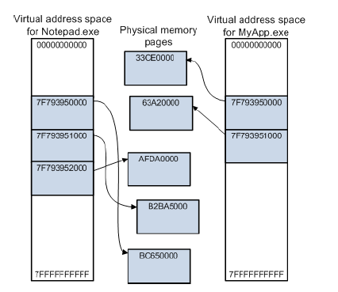

Kullanıcının uygulamaları "User Space" , OS servis,sürücüleri "Kernel Space" içindedir. Kullanıcı uygulamlarının private memory space'i bulunur(her uygulama için ayrı hafıza alanı ve adresi) fakat OS sadece bir sanal adres uzayı kullanır. Kullanıcı uygulamaları bunun yanında handle tablosuna sahiptir ve bir kullanıcı prosesi crash olduğunda o uygulamanın sanal adresi ve handle tablosu ile sınırlıdır diğer uygulamaları etkilemez ve diğer uygulamalara erişemez çünkü private bir hafıza alanı ayrılmıştır user-mode uygulamalar için. Fakat "kernel-mode" bir proses,sürücü vb. crash olur ise işletim sistemi tümünden etkilenir.
Sanal Adres Uzayı(Virtual Address Space)
notepad.exe gibi uygulamalar user mode ‘ da çalışır ve private bir sanal adrese sahiptir veadreslerin bulunduğu boşluk user space olarak adlandırılır.Kernel mode’da çalışan tüm kodlar tek bir sanal adrestedir ve system space olarak adlandırılır.32 bit bir Windows’da totalde 2^32 yani 4 GB’lik bir sanal adres vardır.Genelde lower(düşük) olan 2 GB’lik bölümü user space , upper(yüksek) olan 2GB’lik bölümü ise system space kullanır.

NTDLL.DLL
Native uygulamalar ve subsystem dll'leri tarafından kullanılmak üzere özel kütüphaneler bulundurur. Windows Executive Sistem Servislerini, fonksiyonlarını user-mode tarafından çağırmak için kullanılabilir.450 kadar fonksiyon bulunmaktadır. Örnek NTCreateFile.